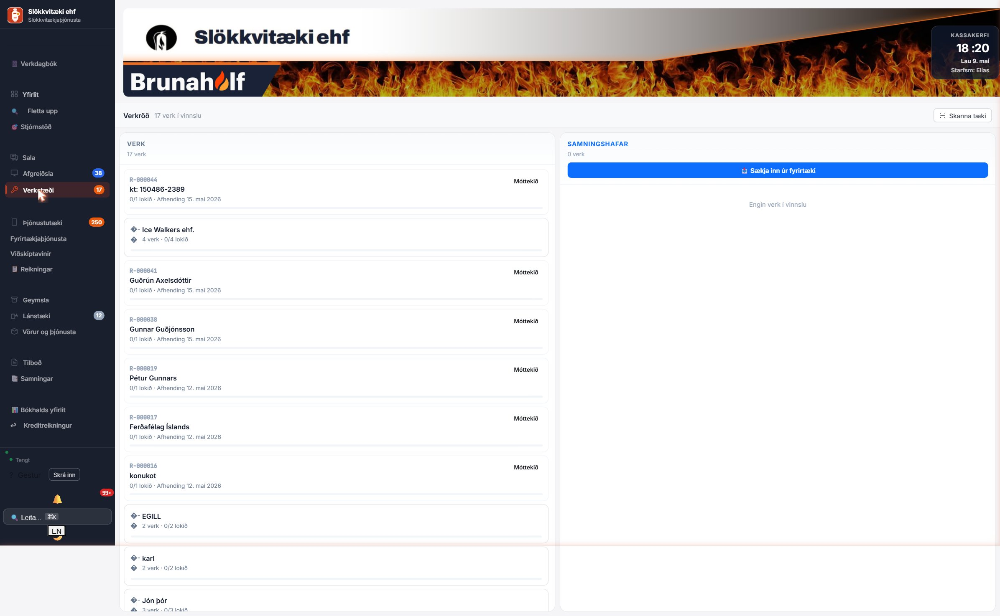
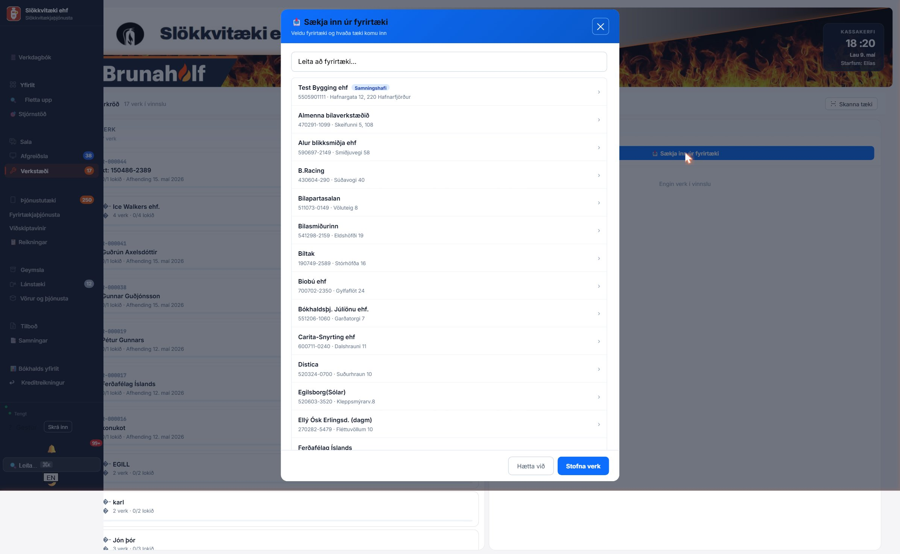
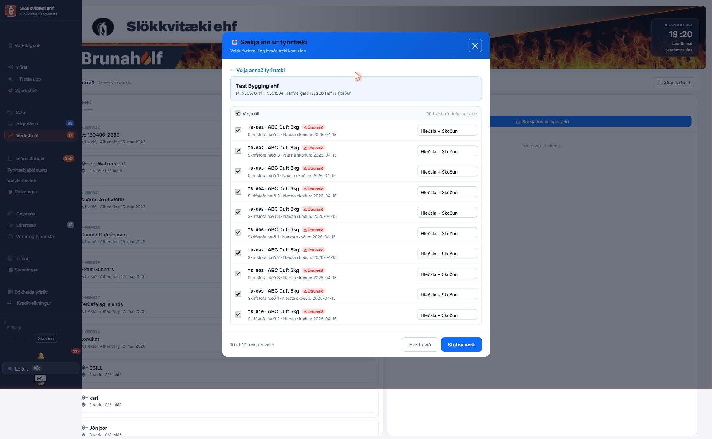
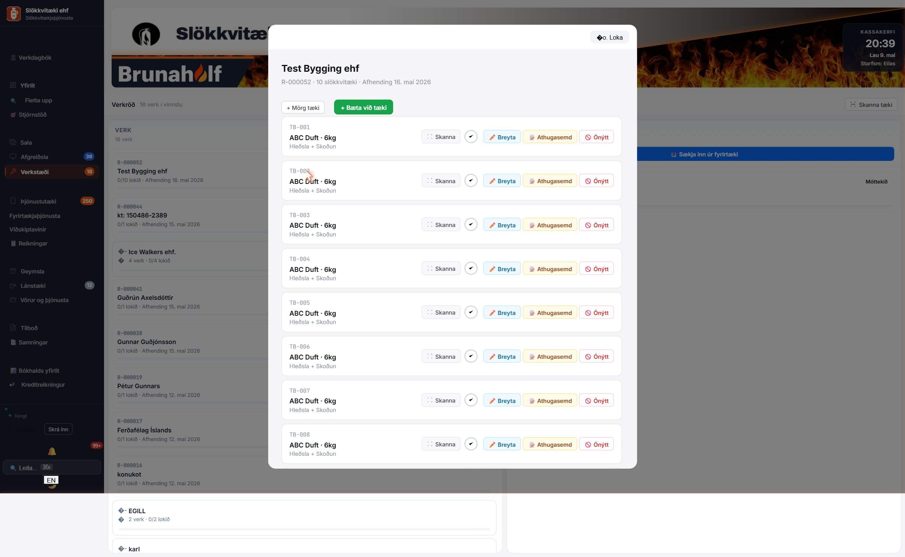
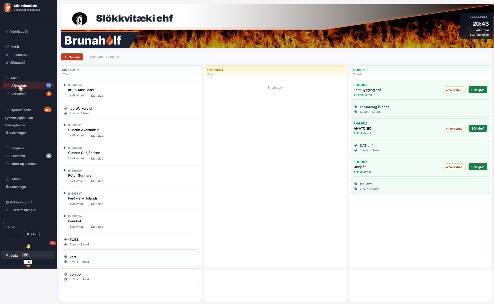
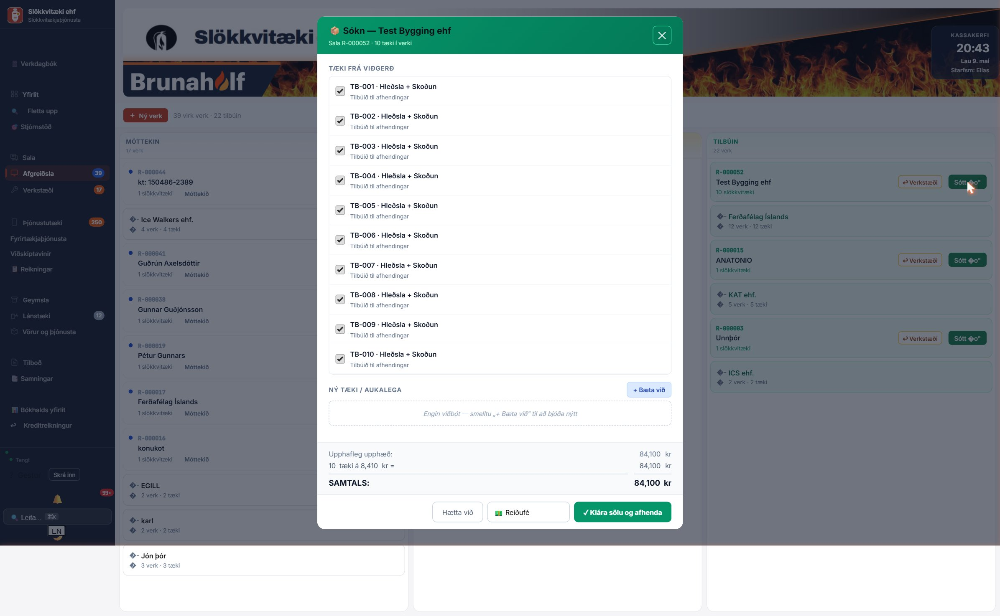
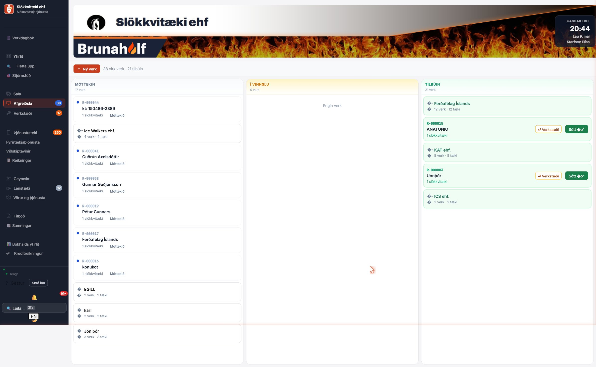
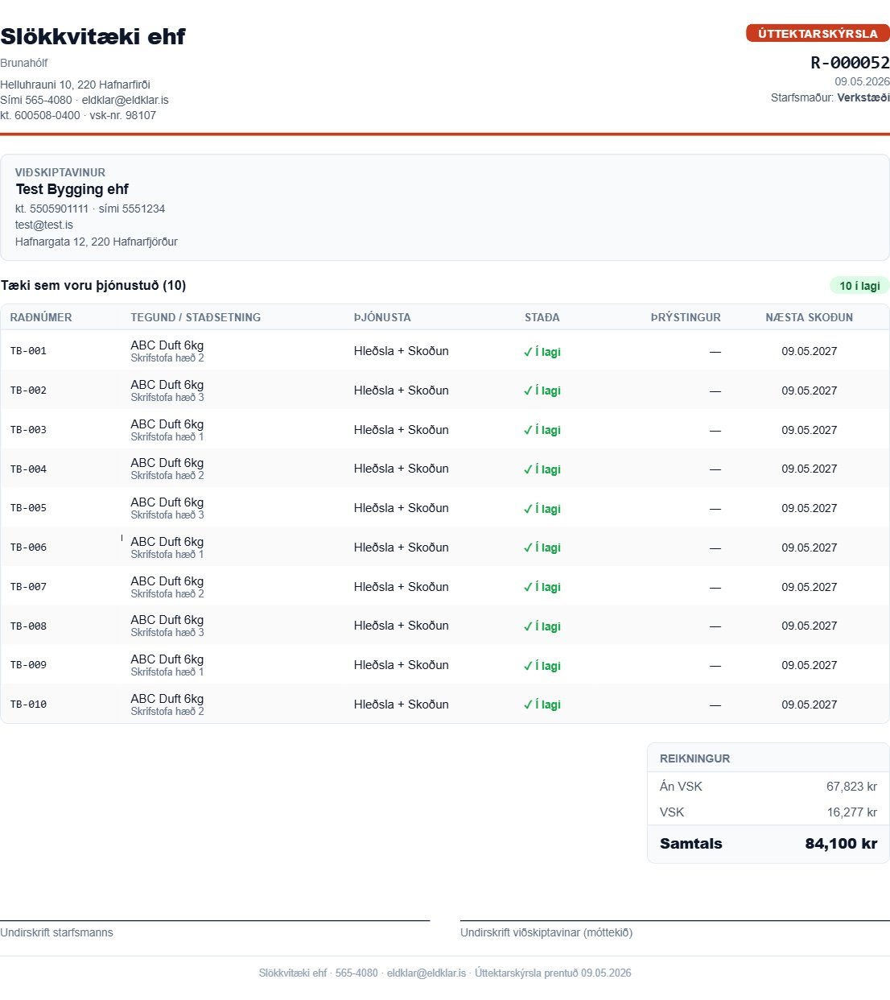

Þetta er tilfellið: Bílstjóri kemur úr eftirliti hjá fyrirtæki með 10 slökkvitæki sem þarf að hlaða og skoða. Hér er hvernig þú færir þau í gegnum kerfið — frá innkomu og þangað til viðskiptavinur fær úttektarskýrslu og reikning.
Smelltu á Verkstæði í vinstri valröðinni. Þú sérð tvær súlur:

Bláa takkann „Sækja inn úr fyrirtæki" notarðu þegar þú kemur með tæki úr eftirliti.
Þetta opnar lista yfir öll fyrirtæki í kerfinu. Fyrirtæki sem eru með þjónustusamning birtast efst með bláu „Samningshafi" merki.

Smelltu á fyrirtækið. Kerfið sýnir öll tæki sem skráð eru á fyrirtækið með gátreitum. Sjálfgefið eru þau öll valin.

Þrjár leiðir til að haka af:
Þegar þú hefur valið rétt tæki smellirðu á græna „Stofna verk" takkann neðst.
Kerfið býr sjálfvirkt til:
R-000052)Verkið er nú í báðum súlum: Verk og Samningshafar (af því Test Bygging er með samning). Toast-skilaboð staðfesta upphæðina.
Smelltu á verkið í Verk-súlunni til að opna verkglugga. Þú sérð öll tækin sem þarf að vinna á, með takka fyrir hvert: Skanna, ✓, Breyta, Athugasemd, Ónýtt.

Þegar tæki er hlaðið / skoðað smellirðu á ✓ takkann við hliðina á því. Hringurinn fyllist grænn og verkið flyst úr „í vinnslu" í „lokið".
Vinstri kortið sýnir framvindu: „1/10 lokið".
Halda áfram þangað til öll 10 tæki eru græn:
status='done' á verklínunni. Næsta skoðun á uppsettu tækinu (uttaeki) uppfærist í +12 mánuði sjálfvirkt þegar viðskiptavinur sækir.Eftir að öll tæki eru kláruð (10/10 lokið) flyst verkið sjálfvirkt í Afgreiðslu-súluna TILBÚIN. Þaðan tekur afgreiðsla við.

Smelltu á Afgreiðsla í valröð til að sjá þessa sýn.
Þegar viðskiptavinur kemur að sækja tækin smellirðu á græna takkann „Sótt ✓" á verkkortinu.

Sókn-glugginn opnast og sýnir:
Veldu greiðslumáta í dropdown-inum neðst (sjálfgefið Reiðufé) og smelltu á græna takkann „✓ Klára sölu og afhenda".

Toast neðst staðfestir: „✓ Sótt og selt — 84,100 kr"
Sjálfvirkt núna:
final stöðu (sést í Bókhaldi/Tekjum)Á reikningi/sölu finnur þú takkann „Skýrsla". Smelltu á hann til að opna A4 prentanlega úttektarskýrslu með:

| Aðgerð | Sjálfvirkt í kerfinu |
|---|---|
| Stofna verk | Verkbeiðni + drög að sölu + verklínur (1 per tæki) |
| Smella ✓ á tæki | verklidur.status = 'done' |
| Öll tæki kláruð | Verkkort flyst yfir í „Tilbúin" |
| Smella „Sótt ✓" | Sala fer í final, +12 mán á uttaeki, lokar verkbeiðni |
| Greitt síðar | Sala fer í Reikninga (Ógreitt) þangað til Greitt |
Smelltu á 🚫 Ónýtt takkann í verkglugga í stað ✓. Tækið fer í scrapped stöðu og viðskiptavinur fær nýtt tæki í staðinn (kerfið býr til viðbótarvörulínu).
Í verkglugganum er takkinn „+ Bæta við tæki" efst. Þú getur skannað strikamerki eða slegið inn raðnúmer handvirkt.
Veldu „Greitt síðar" í dropdown-inum við útreikninga. Salan fer í Reikningar sem ógreidd og bíður þangað til þú merkir Greitt.
Bæta má við aukatækjum í verkglugganum með „+ Bæta við tæki" áður en þú merkir verkið Tilbúið. Eða stofnaðu nýja sölu með „Walk-in" leiðinni.
Slökkvitæki ehf · 565-4080 · eldklar@eldklar.is
→ Næsta kennslubók: Walk-in sala